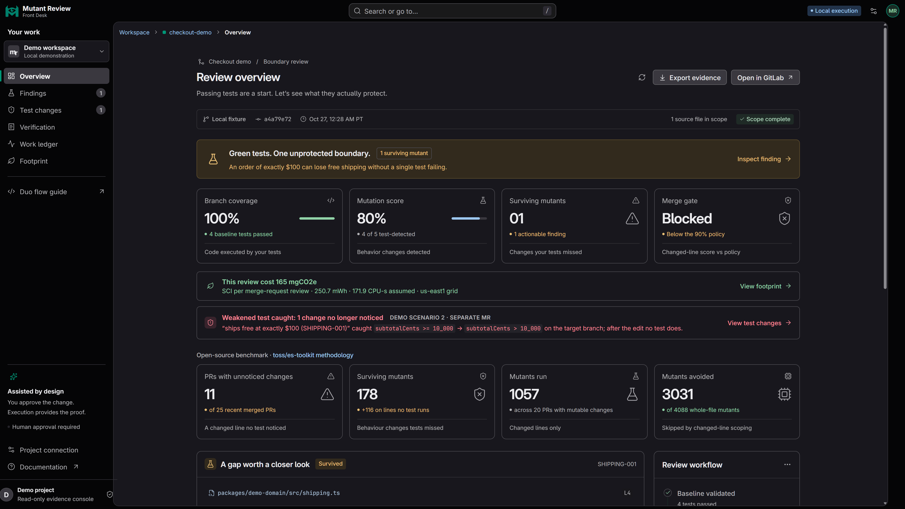
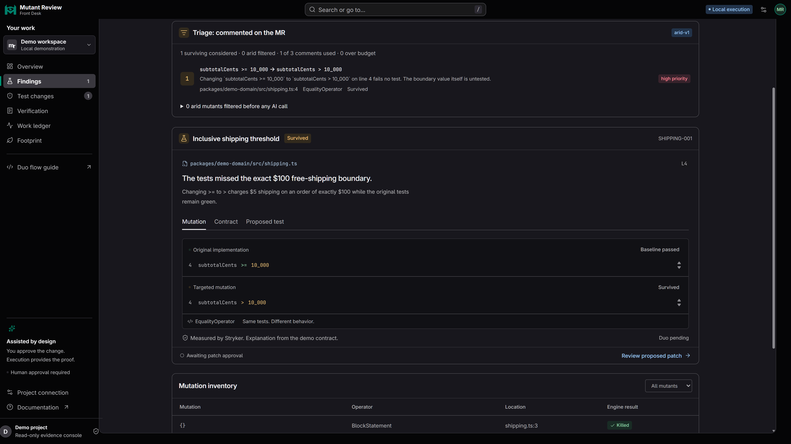
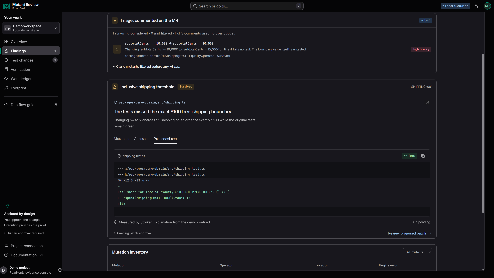
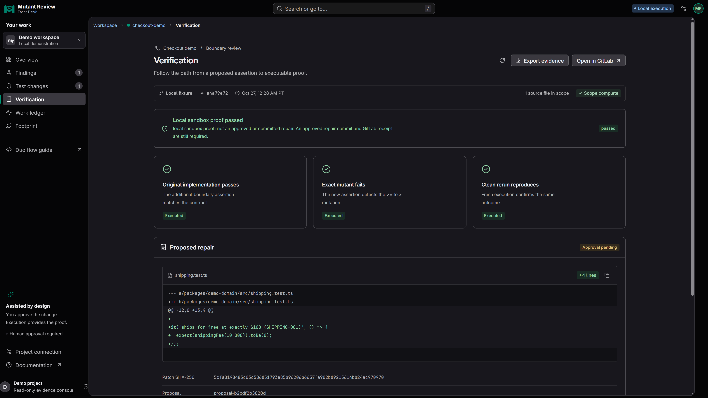
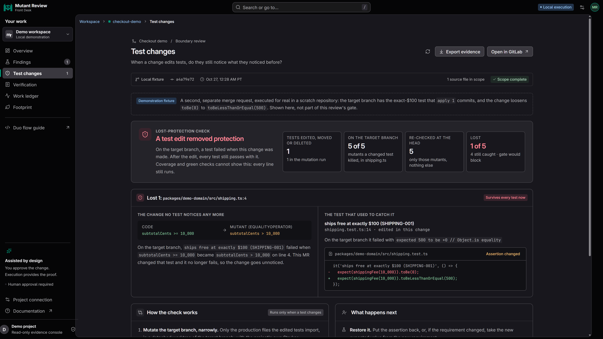
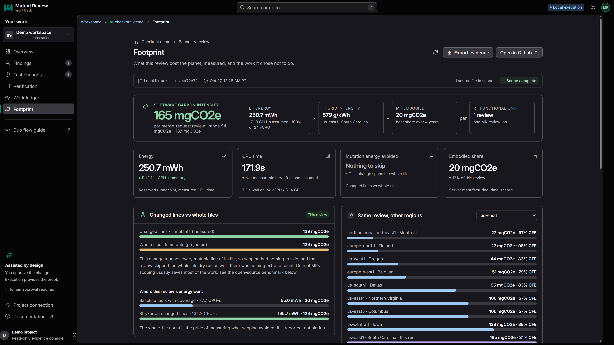

Same code. A different question.


>=becomes>expect(shippingFee(10_000))
.toBe(0);Expected value comes from the written contract.


shippingFee(10_001)Passes with >= and >
shippingFee(10_000)Passes on original. Fails on mutant.
$ npm run test:e2e8 tests passed • real Vitest + StrykerIncludes draft rejection and approved repair checks@mutant-review apply 1Use the configured flow account handle in your project.Changed-line mutation score in the local e2e test
shipping.test.ts+repair ledger+AGENTS.md lesson

Tests that notice when the code breaks.
Human approval. Executable proof.gitlab.com/mutant-review1/mutant-reviewMusic: “Cipher” — Kevin MacLeod (incompetech.com)
Creative Commons Attribution 4.0 • creativecommons.org/licenses/by/4.0/
Excerpt, volume adjustment and fades • No voiceover
Your tests passed. Would they notice the code breaking?
MutantReview checks whether your tests can detect a behavior change.
This is the real Front Desk, running a fresh local review.
Four baseline tests pass, with 100% branch coverage.
But one of five mutations survives. The 80% score blocks the 90% gate.
MutantReview changes the code slightly and reruns the tests.
Here, “at least $100” becomes “more than $100.”
An order of exactly $100 loses free shipping. No existing test notices.
The written contract says orders of at least $100 ship free.
The missing test checks exactly 10,000 cents and expects zero shipping.
This local fixture shows the repair. In the Duo flow, the agent drafts it.
A proposed test must pass on the original implementation.
It must also fail against the exact mutation it claims to catch.
A clean rerun reproduces both results. This is execution evidence.
A convincing-looking test can still protect nothing.
Testing $100.01 passes with both comparisons, so that draft is rejected.
The real Vitest and Stryker end-to-end tests verify that rejection.
A human selects the verified tests to apply through a merge request comment.
The flow checks permissions, proposal integrity, and the reviewed revision.
In the local end-to-end test, the approved repair moves the score to 100%.
The repair records its result and teaches AGENTS.md.
MutantReview also checks whether edited tests lose existing protection.
This separate local scenario catches a boundary test that was weakened.
Green tests should never hide behavior they used to protect.
Changed-line scope and a three-finding limit keep the review focused.
The console shows the findings, proof, history, and execution footprint.
MutantReview. Tests that notice when the code breaks.
Find the project on GitLab. Human approval. Executable proof.